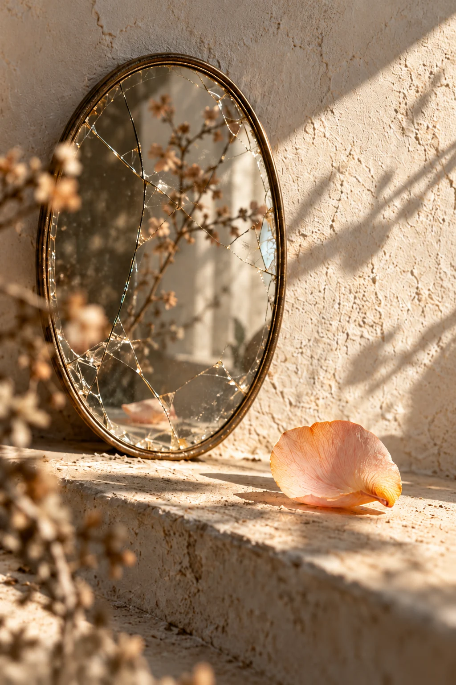
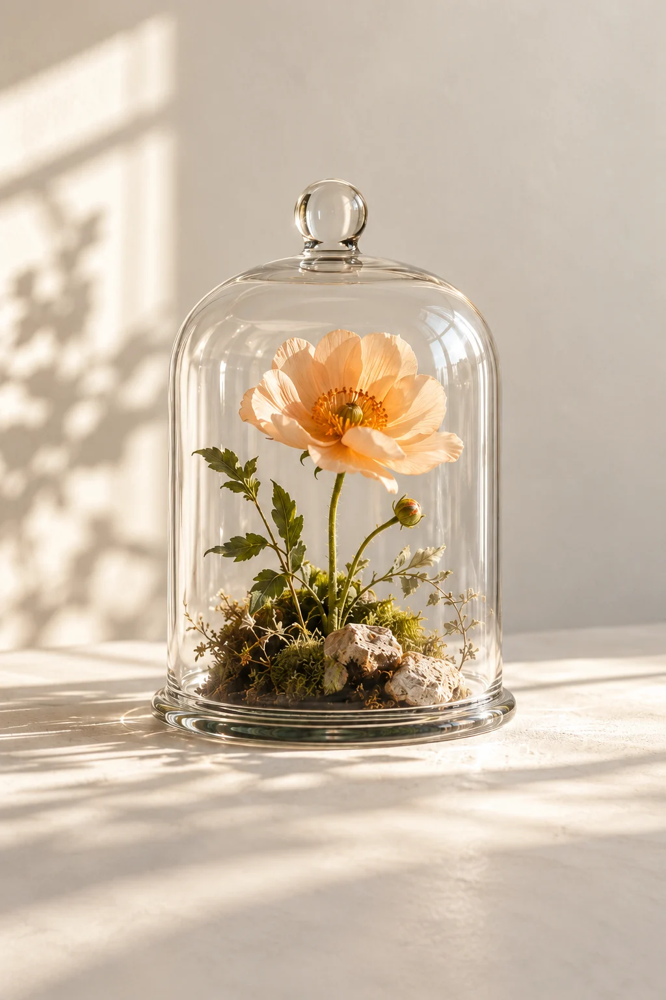

الابتسامة التي
لم تصل
تخيّل أنك تضع هاتفك على الطاولة بعد خبرٍ انتظرته طويلًا. انفرج أمر، أو اكتمل عمل، أو عاد إلى البيت شيء من الطمأنينة. ترفع وجهك إلى الجالس أمامك، وتبدأ بالكلام قبل أن ترتّب الجملة. لا تطلب منه شيئًا. تريد فقط أن يصل إليه الفرح الذي لم يتّسع له صدرك وحده.
يقول كلمة تهنئة. ثم يسأل عمّا دفعته، أو عمّن ساعدك، أو عن العيب الذي لم تنتبه إليه. تعود إلى الحكاية لتشرحها، لكن صوتك صار أخفض. بعد قليل، تجد نفسك تدافع عن خبرٍ جئت لتحتفل به. تنتقل من السعادة إلى تقديم المبرّرات، وتترك على الطاولة جزءًا من ابتسامتك.
هذه صورة محتملة لما تقصده العبارة. خطرها في اللحظة التي يتعلّم فيها الإنسان أن يعتذر عن يومٍ طيب. أن يشرح لماذا يستحق الراحة. أن يخفي الجزء الجميل من حياته حتى لا يزعج أحدًا. عندها تصبح التهنئة بابًا صغيرًا إلى المحاكمة، ويصير صاحب الفرح أول من يشك فيه.
ومع ذلك، لا تُحمّل الصمت أكثر مما يحتمل. قد يكون الآخر متعبًا، شاردًا، أو عاجزًا عن التعبير. وجه واحد في لحظة واحدة لا يكشف ما في القلب. ما يستحق انتباهك هو الأثر المتكرر: تخرج من كل لقاء أصغر، وتتعلم قبله أن تحذف من حكايتك أكثر مما تقول.
راقب ما يتكرر.

المرآة تُغيّر الصورة. لا تُغيّر الزهرة.
حين تبدأ
بتصغير نفسك
الحسد لا يملك تعريف حياتك.
ولا يحتاج الفرح إلى دفاعٍ دائم.
قد تبدأ المسألة بحذف صورة، ثم باختصار خبر، ثم بالتظاهر بأن ما حدث لا يستحق الاحتفاء. تقول عن نجاحك إنه حظ، وعن راحتك إنها عابرة، وعن الشيء الذي أحببته إنه عادي. ليست المشكلة في قلة الكلام؛ المشكلة في السبب الذي يدفعك إلى قلّته. فرقٌ بين خصوصية تختارها وخوفٍ يختار عنك.
أن يضيق غيرك بفرحك، لا يعني أن تضيق أنت بحياتك. ما بلغته لا يصبح أقل قيمة لأن أحدًا استقبله ببرود، وما أراح قلبك لا يحتاج إلى امتحان جديد أمام كل وجه. حين تمنح النظرة حق الحكم، تنقل ميزان يومك إلى يدٍ لا تعرف ما حملته قبل أن تصل إليه.
وقد يكون الاستنزاف في محاولة إقناع الآخر أكثر منه في كلامه. تعيد شرح تعبك حتى يقرّ بأنك تستحق، وتنتظر ابتسامة صافية حتى تسمح لنفسك بالابتسام. يضيع الفرح في إثبات شرعيته. يكفي أن تعرف ما فعلت، وما دفعت، وما تعنيه لك هذه الخطوة. لا تجعل يومك الجميل ملفًا ينتظر توقيعًا.
احفظ تفاصيل حياتك التي لا تحتاج إلى جمهور. اترك بعض الخطط حتى تنضج، وبعض الأخبار حتى تهدأ في صدرك، وبعض النعم بينك وبين من يصونها. للبيت باب، وللكلام باب أيضًا. إغلاقه أحيانًا لا يعني أن العالم كله عدو.
حدودٌ بلا خصومة
ابدأ بشيء صغير يمكن فعله: قل ما ترغب في قوله، واترك ما لا ترغب فيه. إذا تحوّل السؤال إلى استجواب، تستطيع أن تجيب بأنك تفضّل الاحتفاظ بالتفاصيل. لا يلزمك أن تثبت حسن نيتك بالكشف عن كل شيء، ولا أن تشرح قرارك حتى يرضى عنه من أزعجه أصلًا.
وحين يتكرر التعليق الجارح، سمّ أثره بوضوح. قل إن هذا الكلام ينقص من راحتك، وإنك تريد حديثًا يحترمها. راقب الاستجابة، لا وعود التغيير وحدها. من يحرص على قربك يستطيع أن يصغي إلى حدودك، ومن يصرّ على كسرها يخبرك بشيء عن نوع المسافة التي تحتاجها.
وفي المقابل، لا تعاقب صديقًا على يومٍ ثقيل، ولا تبحث عن عين حاسدة خلف كل سؤال. اترك للناس فرصة السؤال والاعتذار والتعلّم. الحدود تحمي العلاقة حين تسمح لها بأن تستقيم؛ والخوف يقطعها قبل أن تعرف ماذا كان يمكن أن تكون.
ثم اختر من تحمل إليه خبرك الطيب. قد يكون شخصًا واحدًا يكفي معه سطر، فلا يستجوبك ولا يصغّر ما أحببت. وجوده يذكّرك بأن الفرح قابل للمشاركة، وأن الراحة لا تستدعي الاختباء. لا تحتاج إلى إغلاق النوافذ كلها. تحتاج إلى معرفة النافذة التي يدخل منها الهواء.
اختر من يتّسع لك.
لا تُطفئ نفسك.
اختر نافذتك.
اختر مرافقةً يفرحون لفرحك،
ويتّسعون لنورك، ولا يجعلون سعادتك
موضعًا للمقارنة.
قد تشارك خبرًا صغيرًا فيخفّ عن صدرك انتظارٌ طويل. قد يقول لك أحدهم إنه سعيد لك، فتفهم من نبرته أنك لست مضطرًا إلى تخفيف فرحك مراعاةً له. هذه العلاقات لا تصنع سعادتك بالنيابة عنك، لكنها تتركها سليمة حين تمرّ بينها.
احذر أن تصبح حماية الفرح حبسًا له. افرح بالقدر الذي تسمح به حياتك، واشكر ما جاءك، وامنح من تحب نصيبًا من البهجة. ما تخشاه من الحسد لا يستحق أن يأخذ منك مقدمًا الشيء الذي تريد حمايته.
لن تكون مطمئنًا إلى كل عين. يكفي أن تعرف أن لك الحق في الراحة، وفي الإنجاز، وفي يومٍ لا تشرح فيه لماذا ابتسمت. بعض الأخبار يكبر حين تقوله للشخص المناسب، وبعضها يستقر حين تتركه في قلبك. كلاهما اختيارك.
ابقَ مضيئًا.
